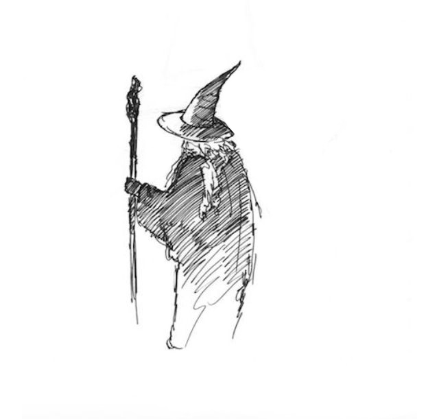
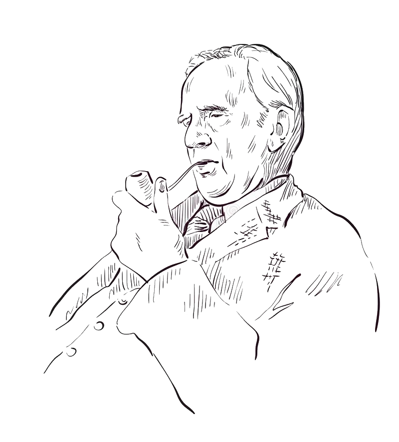
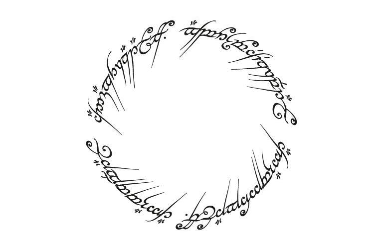
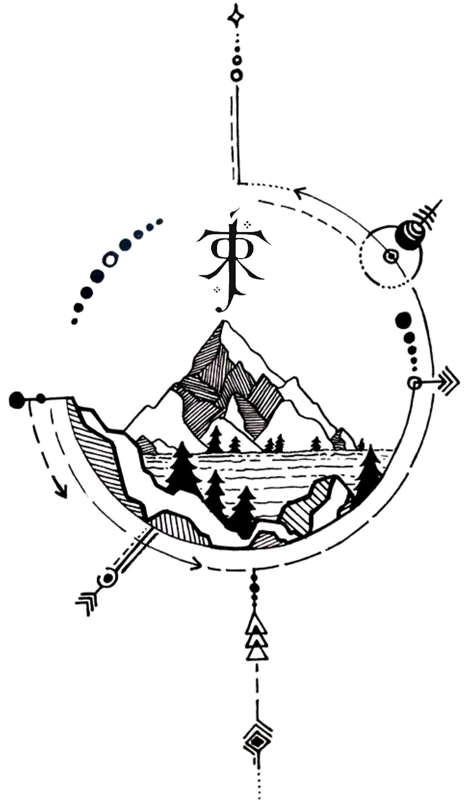
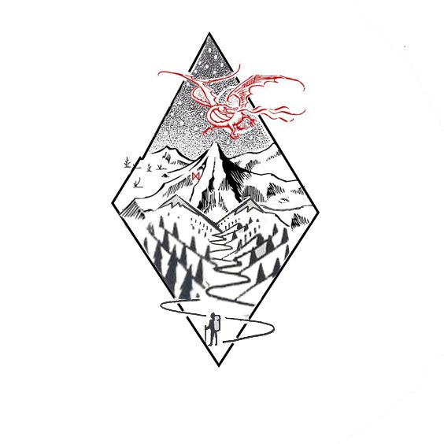
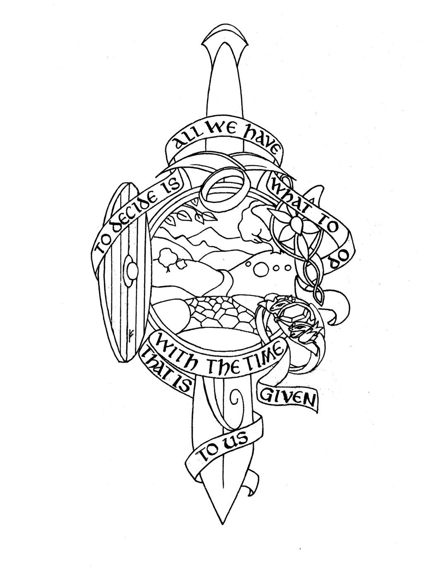
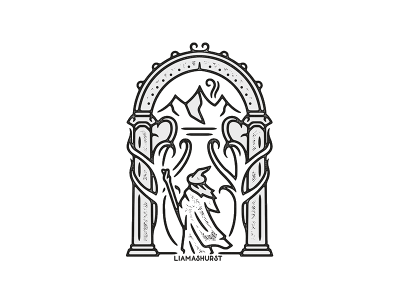

The Lord Of The Rings
The Lord Of The Rings

Despre Stapânul Inelelor
Despre Stapânul Inelelor
Stăpânul inelelor (în engleză: The Lord of the Rings) este un roman de fantezie scris de profesorul universitar și filologul englez J. R. R. Tolkien. Cartea a fost scrisă în anii 1937 - 1949, iar partea sa esențială a fost creată în timpul celui de-al doilea război mondial. Lucrarea a fost publicată în trei volume în 1954 și 1955, această formă fiind cea mai populară. A fost retipărită de mai multe ori și tradusă în diferite limbi, devenind una dintre cele mai populare și influente lucrări ale literaturii secolului 20.
Acțiunea cărții Stăpânul inelelor se petrece într-o istorie imaginară, cel de-al treilea Ev al Pământului de Mijloc. Ținuturile din Pământul de Mijloc sunt populate de oameni și de alte specii umanoide (hobbiți, de elfi, gnomi și orci), precum și de multe alte creaturi reale sau imaginare. Narațiunea este focalizată pe Inelul Puterii făurit de lordul întunecat Sauron și variază de la descrierea atmosferei liniștite din Comitat până la desfășurarea Războiului Inelului, purtat de Pământul de Mijloc și văzut prin ochii personajelor sale, în special ai protagonistului Frodo Baggins. Acțiunea principală este urmată de șase anexe care oferă o multitudine de materiale contextuale istorice și lingvistice.
Volumul Stăpânul inelelor, la fel ca celelalte scrieri ale lui Tolkien, a fost supus unor analize cuprinzătoare privind temele literare și sursele. Deși Stăpânul inelelor este o lucrare amplă, acțiunea este numai ultima fază a unei mitologii la care Tolkien a lucrat încă din 1917. Tolkien a fost influențat de filologie, mitologie, industrializare și religie, precum și de scrierile sale timpurii și de experiența sa din primul război mondial. La rândul său, Stăpânul Inelelor este considerat a avea un efect major asupra fantasticului modern, iar impactul lucrărilor lui Tolkien este atât de mare încât termenul „tolkienian“ a fost consemnat în Oxford English Dictionary.
Imensa și continua popularitate a Stăpânului inelelor a produs numeroase referințe în cultura populară și a dus la fondarea a numeroase organizații de către fanii lucrărilor lui Tolkien și la publicarea a numeroase cărți despre Tolkien și lucrările sale. Stăpânul inelelor a inspirat și continuă să inspire arta, muzica, industria filmului și televiziunea, jocurile video și literatura ulterioară. Adaptări ale Stăpânului Inelelor au fost realizate pentru radio, teatru și film. Producerea în 2001-2003 a aclamatei ecranizări a trilogiei Stăpânul inelelor a generat un nou val de interes față de Stăpânul inelelor și de celelalte lucrări ale lui Tolkien.

Despre J. R. R. Tolkien
Despre J. R. R. Tolkien
John Ronald Reuel Tolkien a fost un scriitor, poet, filolog și profesor de universitate englez, cunoscut cel mai bine pentru cărți fantastice clasice: Hobbitul și Stăpânul Inelelor.
A fost profesor de anglo-saxonă la Oxford (mai exact la catedra Rawlinson and Bosworth) din 1925 până în 1945 și profesor de limbă și literatură engleză din 1945 până în 1959. A fost un Romano-Catolic devotat și prietenul lui C. S. Lewis - amândoi fiind membri ai clubului de discuție cunoscut sub numele The Inklings.
După moartea sa, fiul lui, Christopher, a publicat foarte multe cărți bazate pe notațiile și manuscrisele nepublicate ale tatălui său, incluzând Silmarillion. Acestea, împreună cu Hobbitul și Stăpânul Inelelor, formează un complex de povestiri și poezii legate între ele, precum și istorii fictive, limbi și dialecte inventate și eseuri despre lumi imaginare precum Arda și Pământul de Mijloc. Între 1951 și 1955, Tolkien a publicat un Legendarium al acestor povestiri.
Deși mulți alți autori au publicat lucrări fantasy înaintea lui , imensul succes al Hobbitului și Stăpânului Inelelor când au fost publicate în ediție necartonată în Statele Unite a dus la o popularizare uriașă a genului, și Tolkien este acum considerat "tatăl" literaturii fantastice Lucrările lui Tolkien au inspirat o serie de multe alte romane și nuvele fantasy și science-fiction. În 2008, revista The Times l-a plasat pe locul al 6-lea în lista celor mai buni scriitori britanici din 1945 până în prezent.

Scrierea Stăpânului Inelelor
Scrierea Stăpânului Inelelor
Stăpânul inelelor a fost conceput sub statutul de continuare a Hobbitului, o poveste fantastică publicată în 1937, scrisă de către Tolkien pentru copiii săi. Din cauza popularității dobândite de către această poveste Tolkien a fost contactat de către edituri pentru a scrie mai multe povești despre hobbiți și goblini. Astfel, la vârsta de 45 de ani, Tolkien a început să scrie la ceea ce urma să devină Stăpânul inelelor. În anul 1949 Tolkien a terminat scrierea cărții, dar cartea a fost publicată de abia în 1955, când Tolkien avea 63 de ani.
Inițial Tolkien nu a intenționat să scrie o continuare pentru Hobbitul și a început să scrie povești pentru copii, precum Roverandom. Munca sa constă în crearea unei lumi numite Arda, unde trăiesc o mare varietate de popoare fantastice, iar el povestește istoria acestora. Multe dintre aceste povești l-au inspirat pe narator în cadrul producerii Stăpânului inelelor. Tolkien a murit înainte de a termina romanul care a fost considerat de multi munca sa de suflet, numit în prezent The Silmarillion, dar fiul său Christopher Tolkien a reușit să editeze munca tatălui său și a publicat romanul în anul 1977. Câțiva editori au menționat că Silmarillion este adevărata muncă a lui Tolkien, deoarece aceasta a ocupat o mare parte din viața sa, prin crearea unei lumi complexe, cu propria cultura, istorie si a mare varietate de limbi imaginate de autor. Stăpânul inelelor este ultima creație a lui Tolkien și ultima amprentă lăsată asupra universului creat de către el.
Fiind presat de către editori, Tolkien a început un nou Hobbit în luna decembrie a anului 1937. După câteva începuturi false, povestea inelului a prins viață și a devenit o continuare a romanului nepublicat The Silmarillion. Ideea primului capitol („O petrecere mult așteptată“) a fost concepută, iar motivele din spatele dispariției lui Bilbo, semnificația inelului și titlul de Stăpânul inelelor nu au fost publicate până în primăvara anului 1938. Inițial Tolkien a plănuit să scrie o poveste în care Bilbo dorea să călătorească, pentru a-și mări averea inițială; totuși el și-a reamintit de inel și de puterile sale și a decis să scrie actuala poveste. Tolkien a început cu Bilbo ca și personaj principal, dar s-a răzgândit, deoarece un hobbit amuzant și petrecăreț nu ar fi fost potrivit pentru o astfel de poveste. Astfel Tolkien a căutat un nou personaj principal care să ducă povara inelului și a ajuns la membrii familiei lui Bilbo. Inițial scriitorul a vrut să dea viață unui fiu, dar s-a răzgândit deoarece această soluție ar fi generat o serie de întrebări precum cine este soția sa sau de ce l-ar fi lăsat Bilbo pe fiul său se aventureze în călătorii periculoase. În legendele grecești există un erou care a primit artefacte ale puterii, lucru care i-a dat viață lui Frodo, purtătorul inelului. (Tehnic Tolkien l-a făcut pe Frodo vărul de grad secund al lui Bilbo, dar din cauza diferenței de vârstă dintre cei doi, ei se consideră unchi și nepot.)
Scrierea romanului a decurs foarte încet, din cauza perfecționismului lui Tolkien, care a fost întrerupt frecvent de către îndatoririle academice. Conform surselor se pare că Tolkien a abandonat romanul de-a lungul anului 1943. De-a lungul celui de-al doilea război mondial, Tolkien a făcut eforturi uriașe pentru a finaliza cartea. El a terminat-o în anul 1948, dar nu a mai revizuit-o până în 1949.
Între timp a intervenit o dispută cu editura, Tolkien preferând să publice alături de Stăpânul inelelor și Silmarillion, dar editura Allen & Unwin nu a vrut acest lucru. Tolkien a forțat o colaborare cu Collins, Milton Waldman, dar în cele din urmă cartea a fost publicată sub numele Allen and Unwin.
După succesul obținut de către trilogia Stăpânul inelelor, Tolkien a luat în considerare scrierea unui nou roman, care ar fi trebuit să continue povestea precedentului. În acesta populația Gondorului se convertesc la culte întunecate și se întorc împotriva fiului lui Aragorn, Eldarion. Totuși Tolkien nu a ajuns niciodată prea departe la scrierea cărții, iar unele părți au fost anexate volumului "Peoples of Middle-Earth" din seria "The Histories of Middle-Earth". Instantaneu, Tolkien s-a reîntors la revizuirea poveștii Silmarillion, dar a murit înainte de a termina acest proiect, iar cartea a fost publicată post-mortem de către fiul său, Christopher Tolkien în 1977.

Publicarea Stăpânului Inelelor
Publicarea Stăpânului Inelelor
Cele trei părți au fost publicate pentru prima dată cu un decalaj de câteva luni, în 1954 și 1955 de către editura Allen & Unwin. De atunci au fost republicate de mai multe ori și de mai multe edituri în seturi de câte unul, trei, șase sau chiar șapte volume. La începutul anilor 1960, Donald A. Wollheim, editor de cărți științifico-fantastice al editurii Ace Books, a emis teoria că Stăpânul inelelor nu era protejat în Statele Unite de către legea americană a drepturilor de autor, deoarece ediția americană fusese legată din pagini tipărite în Marea Britanie, cu intenția originală fiind ca acestea să fie tipărite în ediția britanică. Ace Books a inițiat publicarea unei ediții, neautorizată de către Tolkien și fără ca drepturile de autor să îi fie plătite. Tolkien a luat atitudine față de aceasta, anunțându-și rapid fanii în privința acestei obiecții. Presiunea exercitată din partea organizațiilor de fani a devenit atât de mare, încât Ace Books și-a retras ediția și a plătit drepturile de autor ale lui Tolkien, însă cu mult sub ce ar fi trebuit să primească în cazul unei publicații obișnuite. Totuși, acest început nefericit a fost umbrit atunci când o ediție autorizată publicată de Ballantine Books a avut un uriaș succes comercial. Pe la mijlocul anilor 1960 romanul, din cauza largii expuneri în fața publicului american, devenise un adevărat fenomen cultural. Tot în această perioadă Tolkien a început revizii variate ale textului pentru a produce o versiune a cărții care să aibă drepturi americane de autor de netăgăduit. Aceasta va deveni mai târziu A doua ediție a Stăpânului inelelor. Ani mai târziu teoria drepturilor de autor avansată de către Ace Books a fost repudiată iar ediția lor a fost găsită că violase drepturile de autor ale lui Tolkien conform legii americane.
De la tipăririle originale din anii 1950 și 1960, au apărut multe ediții diferite ale Stăpânului inelelor. În anii 1990 (parte din cauza anticipării viitoarei ecranizări a trilogiei Stăpânul inelelor) mai multe noi ediții au fost publicate, inclusiv o ediție de trei volume cartonate de la editura Houghton-Mifflin, prezentând ilustrații color realizate de către Alan Lee. În 2004 o nouă ediție a fost publicată pentru a celebra a 15-a aniversare a publicației originale a cărții.
Romanul a fost tradus, cu grade variate de succes, în zeci de alte limbi. Tolkien, un expert în filologie, a examinat multe din aceste traduceri și a avut comentarii asupra fiecăreia, care reflectă atât procesul traducerii, cât și munca sa. Pentru a ajuta traducătorii, Tolkien a scris Ghidul numelor din Stăpânul inelelor. Deoarece se dorește a fi o traducere a Cărții Roșii a Marșului Vestic, traducătorii au un grad neobișnuit de libertate în privința traducerii Stăpânului inelelor și în contrast cu practica modernă, numele intenționate a avea un înțeles particular în versiunea engleză sunt traduse pentru a oferi un înțeles asemănător limba respectivă. În germană, de exemplu, numele „Baggins“ devine „Beutlin“ (conținând cuvântul Beutel care înseamnă „sac“) iar „elf“ devine „Elb“ (Elb nu prezintă conotațiile sau interpretările greșite ale echivalentului său englez și din acest motiv este o variantă mai potrivită pentru creația lui Tolkien).

Influențe
Influențe
Stăpânul inelelor este materializarea explorării intereselor lui Tolkien: filologie, religie (în special catolicismul roman), basme, mitologia Scandinavă, dar romanul este puternic influențat și de către evenimentele Primului Război Mondial. Tolkien a creat o lume fictivă extrem de complexă (Eä), în care Stăpânul inelelor este plasat, multe dintre componentele acestei lumi, conform propriilor mărturisiri fiind inspirate de către alte surse.
Tolkien a descris romanul Stăpânul inelelor, prietenului său, membru al Ordinului iezuit Robert Murray ca o „lucrare fundamental religioasă și Catolică, de care nu a fost conștient la început, lucru observat după revizuire“. În cadrul romanului pot fi găsite multe teme teologice care includ războaie între bine și rău, triumful umilinței asupra mândriei și activitatea zeilor. În plus legenda conține teme precum moartea și imortalitatea, mila și binecuvântarea, învierea, salvarea, pocăința, propriul sacrificiu, dreptatea, propria credință, frăția, autoritatea și vindecarea. De asemenea, Tolkien a declarat că de-a lungul scrierii romanului, în momentele în care Frodo trebuia să lupte împotriva puterii inelului, în mintea sa era prezent deseori versul „Și nu ne duce pe noi în ispită, Ci ne izbăvește de cel rău“ din rugăciunea Tatăl Nostru.
Motive non-creștine sunt puternic reprezentate de-a lungul romanului. Unul dintre exemple ar fi Ainur, un regat al ființelor angelice, responsabile pentru conceperea lumii, încluzându-l pe Valar, cel mai mare dintre „zei“ împuternicit cu sarcina de a menține echilibrul și servitorii săi maiarii. Conceptul de Valar implică influențe mitologice scandinave și grecești, de asemenea Ainur și lumea în sine sunt creații ale unui zeu monoteist - Ilúvatar or Eru, „Unicul“. Religia menționată în Stăpânul inelelor este descrisă pe larg în romanul Silmarillion. Totuși rămân multe lucruri neclarificate precum „Marele Dușman“, maestru al lui Sauron. Alte elemente necreștine apar în roman precum neumanii (piticii, elfii, hobbiții și enții), un „Om Verde“ (Tom Bombadil) și spirite sau stafii (Oamenii morți din Dunharrow).
Mitologiile nord Europene sunt probabil cel mai bine reprezentate de-a lungul romanului. Elfii și gnomii creați de către el sunt bazați puternic pe legende scandinave și germanice. Numele precum „Gandalf“, „Gimli“ sau „Middle-earth “ (termenul în engleză pentru „Pământul de Mijloc“) sunt cuvinte derivate direct din mitologia nordică. Personajul Gandalf este influențat în mod special de către zeitatea germanică Odin, Tolkien însuși menționând într-o scrisoare din anul 1946 că și-l imaginează pe Gandalf ca pe un vrăjitor Odinic.
Influențe specifice ale mitologiilor Europene includ poemul anglo-saxon Beowulf. Este posibil ca Tolkien să fi împrumutat elemente ale legendei Völsunga saga, în mod special Inelul magic de aur și sabia rupă care este refăurită. În Völsunga saga aceste lucruri sunt Andvarinaut și Gram, ele corespund cu inelul și Narsil/Andúril. Mitologia finlandeză și multe alte elemente din cartea de poeme Kalevala au jucat un rol important asupra creării Pământului de Mijloc. În manieră asemănătoare cu Stăpânul inelelor, Kalevala este centrată asupra unui artefact magic, numit Sampo, care îi aduce avere purtătorului său, dar nu îi dezvăluie niciodată natura acestuia. Precum Sampo, Inelul este disputat de către forțele binelui și ale răului pentru ca în final să fie distrus pentru „binele majorității“. O altă paralelă între cele două cărți este vrăjitorul, Gandalf împrumută unele din acțiunile lui Väinämöinen (vrăjitorul din Kalevala). Ambii luptă alături de forțele binelui și în finalul romanului pleacă spre o lume a nemuririi. Tolkien s-a inspirat din limba finlandeză când a creat limba elfă Quenya.
Deasemenea este clar că inelul are o aplicabilitate largă privind conceptul de putere absolută și efectele sale, iar accentuează ideea că oricine încearcă să obțină putere de pe seama sa va fi inevitabil corupt de către el. Conceptul de „inel al puterii“ este prezent și în dialogul Socratic al lui Plato - Republica, în Cercul inelului - Richard Wagner și în povestea Inelul lui Gyges.
Piesa Macbeth, scrisă de către Shakespeare l-a influențat pe Tolkien într-o oarecare măsură. Atacul Enților asupra cetății Isengard a fost inspirat de către „Pădurea Birnam venind spre Dunsinane“ în piesa lui Shakespeare.
La un nivel mult mai personal, unele locații și personaje au fost inspirate de către copilăria lui Tolkien din Sarehole și Birmingham. Comitatul pare a fi influențat în mare parte de către Colegiul Stonyhurst din Lancashire, unde Tolkien a studiat în anii 1940. Stăpânul Inelelor a fost inspirat crucial de către participarea lui Tolkien la Primul Război Mondial și a fiului acestuia la Cel De-Al Doilea Război Mondial. Acțiunea centrală a cărților este plasată în jurul unui război dintre bine și rău, în pragul unui nou mileniu. Acest război poate fi întâlnit în mitologia scandinavă, dar Primul Război Mondial este o influență clară asupra romanului.
Totuși, romanul are și o serie de influențe moderne. Există o disperare în fața noilor mașinării, simțite chiar de către Tolkien în timpul Primului Război Mondial. Unii susțin că în cadrul romanului există dovezi clare care dovedesc că povestea este puternic influențată de către problemele contemporane cum ar fi industrializarea și urbanizarea din locurile pitorești engleze. Dezvoltarea masivă a unei generații de orci are de asemenea rezonanțe moderne, iar efectele inelului asupra purtătorului aduc indirect în discuție dependența actuală a drogurilor, Tolkien aducând astfel romanul la un nivel modern.
Critică
Critică
Lucrarea lui Tolkien a primit numeroase critici, variind de la teribilă la excelentă. Revizuirile recente ale variatelor publicații media au fost, în majoritate, foarte pozitive. La revizuirea sa originală, Sunday Telegraph a notat că era „printre cele mai mari lucrări de ficțiune imaginativă ale secolului douăzeci“. Sunday Times a părut să fie de acord cu aceste sentimente, atunci când în revizuirea sa era menționat că „lumea vorbitoare de limbă engleză este împărțită în cei care au citit Stăpânul inelelor și Hobbitul și cei care urmează să o facă“. New York Herald Tribune a părut de asemenea să aibă o idee despre cât de populare vor deveni cărțile, scriind în revizuirea sa că erau „predestinate să depășească generația noastră“.
Totuși, nu toate revizuirile originale au fost atât de încurajatoare. Cronicarul de la New York Times Judith Shulevitz a criticat „pedanteria“ stilului literar al lui Tolkien, spunând că acesta „a formulat o credință imaginară față de importanța misiunii sale, aceea de conservator literar, care se pare a fi în realitate moartea literaturii însăși“. Criticul Richard Jenkyns, scriind în The New Republic, a criticat lipsă percepută a capitolului psihologic. Atât personajele, cât și lucrarea însăși sunt, potrivit lui Jenkyns, „anemice și lipsite de conținut“. Chiar și în interiorul grupului literar al lui Tolkien, The Inklings, părerile au fost amestecate. Hugo Dyson s-a plâns cu voce tare față de ce a citit, iar Christopher Tolkien l-a înregistrat pe Dyson „stând pe canapea, și tolănindu-se și strigând și spunând, «Doamne, gata cu elfii»“. Cu toate acestea, alt Inkling, C.S. Lewis, avea sentimente foarte diferite, scriind că „aici sunt frumuseți care pătrund precum săbiile sau ard precum fierul rece. Aici este o carte care vă va mișca sufletul“. În ciuda acestor revizuiri și a lipsei de exemplare până în anii 1960, Stăpânul inelelor s-a vândut bine inițial în varianta cu coperți cartonate.
Câțiva alți autori din domeniu, cu toate acestea, au părut să fie mai mult de acord cu Dyson decât cu Lewis. Autorul de științifico-fantastic David Brin a criticat cartea pentru ceea ce el a perceput a fi un devotament incontestabil față de o structură tradițională socială elitistă, descrierea sa pozitivă a măcelului dintre forțele oponente și romantica sa viziune asupra lumii din trecut. Michael Moorcock, un alt faimos autor de științifico-fantastic și fantastic, este de asemenea critic față de Stăpânul inelelor. În eseul său, „Epic Pooh“, egalează lucrarea lui Tolkien cu Winnie-the-Pooh și o critică împreună cu alte lucrări similare din cauza punctului de vedere închipuit al unei Anglii fericite. Dintr-o întâmplare, Moorcock i-a întâlnit atât pe Tolkien, cât și pe Lewis când era adolescent și susține că i-a plăcut personal, deși nu îi admiră și pe plan artistic.
n 1957, i s-a acordat International Fantasy Award. În ciuda numeroșilor sceptici, publicațiile editurilor Ace Books și Ballantine au ajutat Stăpânul inelelor să devină imens de popular în anii 1960. Cartea a rămas astfel de atunci, plasând-o printre cele mai populare lucrări de ficțiune ale secolului douăzeci, conform atât vânzărilor, cât și opiniilor cititorilor. În sondajul din 2003 „Big Read“ organizat de BBC, Stăpânul inelelor a fost găsit a fi „cea mai iubită carte a națiunii“. În sondaje asemănătoare din 2004, atât Germania, cât și Australia, au considerat Stăpânul inelelor a fi cartea lor favorită. Într-un sondaj din 1999 organizat pentru clienții Amazon.com, Stăpânul inelelor a fost judecat a fi „cartea lor favorită a mileniului“.

Adaptări
Adaptări
Cartea a fost adaptată pentru radio de patru ori. În 1955 și 1956, British Broadcasting Corporation (BBC) a difuzat Stăpânul inelelor, o adaptare de douăsprezece părți a romanului. În anii 1960, postul radio WBAI din New York a produs o scurtă adaptare. O dramatizare a Stăpânului inelelor a fost difuzată la posturile radio din Statele Unite în anul 1979, fiind înregistrată de către ascultători pe CD-uri și benzi. În anul 1981, BBC a produs o nouă interpretare a Stăpânului inelelor formată din douăzeci și șase de episoade, fiecare având o jumătate de oră.
Trei adaptări cinematografice au fost făcute de-a lungul timpului. Prima, numită J. R. R. Tolkien's The Lord of the Rings a fost creată de către animatorul Ralph Bakshi și este prima parte din ceea ce inițial a vrut să fie o adaptare de două părți a poveștii (titlul său inițial fiind Stăpânului inelelor partea 1. Aceasta acoperă romanele Frăția inelului și Cele Două Turnuri. Ce-a de-a doua adaptare, Întoarcerea Regelui a fost făcută în anul 1980 de către Rankin-Bass și este un desen animat. Rankin-Bass a produs o versiune similară a Hobbitului, în 1977. Cea de-a treia adaptare a fost regizată de către Peter Jackson și reprezintă o trilogie captivantă. Trilogia Stăpânului inelelor a fost produsă de către New Line Cinema și a fost lansată în trei părți: Stăpânului inelelor: Frăția inelului(2001), Stăpânului inelelor: Cele Două Turnuri(2002), Stăpânului inelelor: Întoarcerea Regelui(2003). Ultima parte a trilogiei a devenit unul dintre cele două filme care a obținut încasări de peste un miliard de dolari, alături de Titanic. Asemenea acestuia a obținut 11 premii Oscar, incluzând categoriile pentru cel mai bun film și cel mai bun regizor. Această trilogie a readus în atenția publicului romanul lui Tolkien.
În anul 1990, Recorded Books a publicat o versiune audio a cărților. Compania l-a angajat pe actorul britanic Rob Inglis, care a mai avut roluri în Hobbitul, pentru a deveni „vocea“ romanului. Inglis a citit cărțile, folosind voci diferite pentru fiecare personaj și a cântat toate cântecele. Tolkien a compus melodii pentru unele cântece incluse în carte, în rest Inglis a fost nevoit să compună alături de Claudia Howard melodii suplimentare.
Cartea a fost adaptată de câteva ori pentru piese de teatru. Adaptări complete ale romanului au fost făcute în Cincinnati, Ohio, Statele Unite. Un musical a fost creat în anul 2006 pe scena din Toronto, Ontario, Canada în anul 2006, iar un al doilea a fost creat în Londra în luna mai a anului 2007.

Impact
Impact
Din pricina enormei popularități obținute de către romanele lui Tolkien, cererea pieței pentru genul fantastic a crescut. În principiu mulțumită Stăpânului inelelor, acest gen literar a înflorit de-a lungul anilor 1960. Multe alte cărți având teme asemănătoare au fost publicate, incluzând Earthsea cărți scrise de către Ursula K. Le Guin, The Riftwar Saga de Raymond Feist, The Belgariad de David Eddings, The Sword of Shannara de Terry Brooks, nuvelele lui Thomas Covenant despre Stephen R. Donaldson; „Wheel of Time“ cărți scrise de către Robert Jordan și în cazul seriei Gormenghast de Mervyn Peake și The Worm Ouroboros de E. R. Eddison, rediscovered.
De asemenea, în anii 1960 a existat un schimb de influențe între genul fantastic și cel științifico fantastic. În acest fel, cartea Stăpânul inelelor a avut o influență puternică asupra unor scriitori precum Frank Herbert sau Arthur C. Clarke și a unor producători precum George Lucas.
Trilogia a influențat și dezvoltarea industriei jocurilor video, care a dobândit popularitate în anii 1070 cu jocul Dungeons & Dragons, în care apar multe dintre ființele prezente în cărțile lui Tolkien. Cele mai notabile dintre acestea sunt: hobbiții, elfii, gnomii, orcii, dragonii. Totuși, Gary Gygax, principalul producător al jocului, a declarat că a fost foarte puțin influențat de către Stăpânul inelelor și că a inclus aceste elemente pentru a atrage atenția asupra muncii sale. Industria jocurilor video a fost influențată însă puternic de către romanele lui Tolkien, iar nume precum Warcraft sau EverQuest reprezintă doar două dintre multele jocuri fantastice. De asemenea, au fost create jocuri ce se desfășoară pe Pământul de Mijloc.
De asemenea, romanul a influențat mai mult sau mai puțin și alte câmpuri artistice. Termenul Tolkienesc este folosit pentru a face referire la abuzul creat asupra liniei poveștii Stăpânul inelelor : în care un grup de aventurieri pleacă pentru a salva o lume fantastică de armata unui lord întunecat (această poveste a devenit un tipar pentru unele povești). Acest termen este un atestat pentru a dovedi cât a crescut popularitatea acestor cărți, deși mulți critici au descris-o ca pe o poveste de adormit copii. Romanul a ajutat și la popularizarea pluralelor unor cuvinte precum elf sau elfi în limba engleză.
Stăpânul inelelor a avut un efect profund asupra culturii populare încă de la apariția sa, în anii 1950, în special în 1960 și 1970, când tinerii au primit romanul drept o poveste - „Frodo Trăiește!“ și „Gandalf președinte“ fiind două fraze foarte populare în rândurile fanilor lui Tolkien. Exemple mult mai recente constituie jocuri precum șah sau Monopoly și parodii precum Bored of the Rings, Lord of the Beans, episodul South Park: The Return of the Fellowship of the Ring to the Two Towers și musicalul revistei Mad Magazine, intitulat „The Ring And I“. Din pricina popularității obținute de către filmele lui Peter Jackson, influența romanului a rămas puternică și în prezent.
Cartea, și celelalte lucrări ale lui Tolkien i-a influențat pe mulți muzicieni. Formațiile rock ale anilor 1970 au fost inspirate din punct de vedere muzical și textual de către poveștile fantastice ale acelor timpuri. Trupa britanică Led Zeppelin este probabil, grupul cunoscut drept cel mai influențat de opera lui Tolkien. Mai târziu, în anii 80 și 90, câteva trupe metal (în principal nordice) au fost inspirate de către partea întunecată și malefică a romanului. Printre acestea se numără formația germană Blind Guardian, grupul austriac Summoning și trupa finlandeză Nightwish. Mai mult, unele trupe de metal și-au luat nume din poveste (Burzum, Gorgoroth, Uruk-hai, Balrog, Fangorn, Amon Amarth, Ephel Duath and Cirith Ungol de exemplu), iar membrii unor formații au preluat numele unor personaje, precum Count Grishnackh și Shagrath. Chitaristul anilor 1960, Steve Took și-a ales acest pseudonim în onoarea personajului Peregrin Took. Formațiile Iluvatar și Isildur' Bane, ce cântă rock progresiv, împrumută numele unor personaje din carte.
În afara sferei muzicii rock, un număr considerabil de artiști clasici și New Age au fost influențați de munca lui Tolkien. Artista New Age Enya a scris o melodie instrumentală numită „Lothlórien“ în anul 1991 și a compus două cântece pentru coloana sonoră a filmului Stăpânul inelelor: Frăția inelului, una fiind numită „May It Be“ (cântată în engleză și quenya) iar cealaltă este „Aníron“ (cântată în sindarină). Cântărețul suedez Bo Hansson a lansat un album numit „Music Inspired by Lord of the Rings“ (Muzică Inspirată de Stăpânul inelelor) în anul 1970. Ansamblul danez Tolkien a lansat cinci albume ce conțin transpuneri ale poeziilor lui J. R. R. Tolkien.